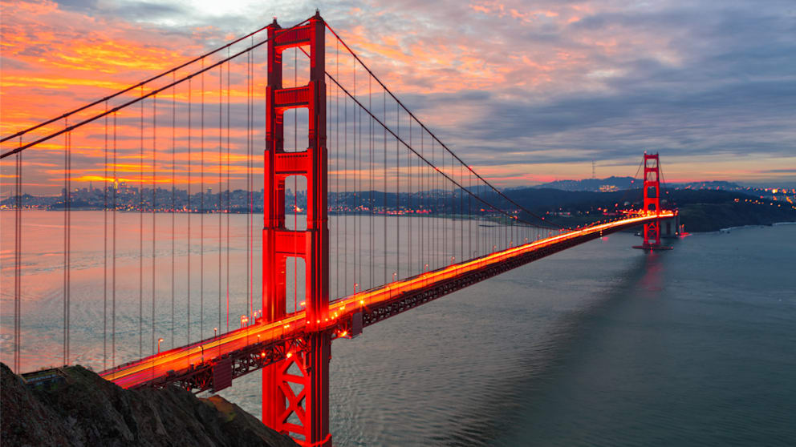

Kalifornien ist ein Bundesstaat im Westen der Vereinigten Staaten von Amerika,
der die gesamte südwestliche Küstenregion des Landes ausmacht. Er grenzt im Westen
an den Pazifik, im Norden an Oregon, im Osten an Nevada und Arizona und hat im Süden
eine gemeinsame Grenze mit dem mexikanischen Bundesstaat Baja California (Niederkalifornien).
Mit über 39 Millionen Einwohnern auf einer Fläche von 423.970 Quadratkilometern
(163.696 sq mi) ist er der bevölkerungsreichste US-Bundesstaat, der drittgrößte
nach Fläche und die bevölkerungsreichste subnationale Einheit in ganz Nordamerika.
Quellen- und Lizenzhinweis:
Dieser Text basiert auf dem Wikipedia-Artikel
Kalifornien
(geänderte Fassung) und steht unter der Lizenz
Creative Commons Attribution-ShareAlike 4.0 International (CC BY-SA 4.0).
Das Bild ist von
Bild